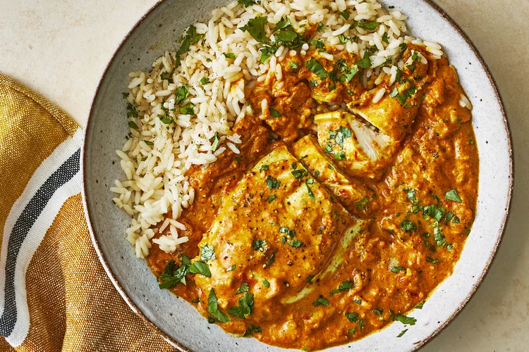

MurghKari Recipe

Description
Enjoy the lavishly delicious taste of chicken curry at home with this easy-to-follow recipe.
Bold spices like ginger, cumin, and curry powder add rich layers of flavor to succulent chicken
coated in a creamy tomato-based sauce. Fill your kitchen with the delightful fragrance of a creamy,
spicy, and filling curry that the whole family will love.
Ingredients
- Butter
- Chicken
- Red Chilli powder
- Salt
- onion
- tomato
Fresh Cream
- Vegetable Oil
- Garam Masala
Steps
- Sprinkle the chicken breasts with 2 teaspoons salt.
- Heat oil in a large skillet over high heat; partially cook the chicken in the hot oil in batches
until completely browned on all sides. Transfer browned chicken breasts to a plate and set aside.
- Reduce the heat to medium and add onion, garlic, and ginger to the oil remaining in the skillet.
Cook and stir until onion turns soft and translucent, 5 to 8 minutes.
- Return chicken breast to the skillet along with any juices on the plate. Pour in 1/2 cup water and
bring to a boil, turning the chicken to coat with the sauce. Sprinkle garam masala and 1 tablespoon cilantro over the chicken.
- Cover the skillet and simmer until chicken breasts are no longer pink in the center and the juices run clear, about 20 minutes.
An instant-read thermometer inserted into the center should read at least 165 degrees F (74 degrees C). Drizzle with lemon juice to serve.